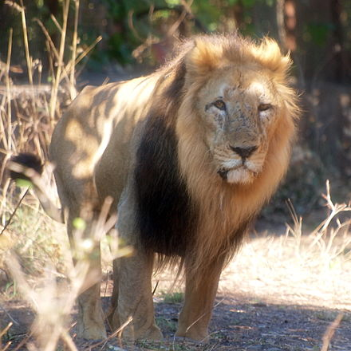

|  |
The Asiatic lion is a Panthera leo leo population surviving today only in India.[1] Since the turn of the 20th century, its range is restricted to Gir National Park and the surrounding areas in the Indian state of Gujarat. Historically, it inhabited much of the Middle East to northern India The first scientific description of the Asiatic lion was published in 1826 by the Austrian zoologist Johann N. Meyer, who named it Felis leo persicus.[3] On the IUCN Red List, it is listed under its former scientific name Panthera leo persica as Endangered because of its small population size and area of occupancy.[4] Until the 19th century, it occurred in Saudi Arabia,[5][6] eastern Turkey, Iran, Mesopotamia, Pakistan, and from east of the Indus River to Bengal and the Narmada River in Central India |